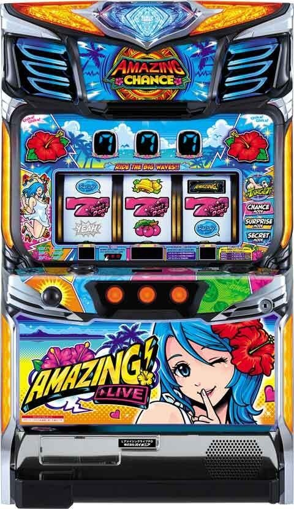
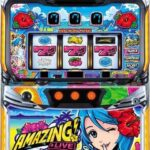
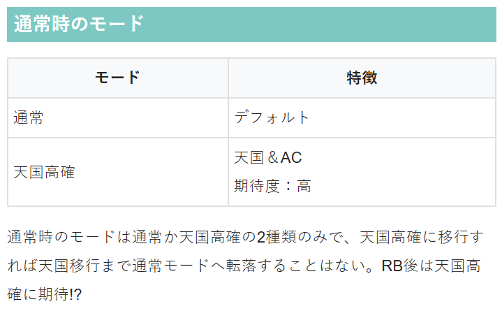
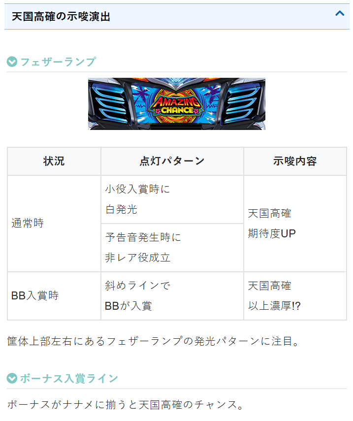

スマート沖スロ アメイジングライブ


※導入台数が少なすぎて暫く狙い目は出て来なそうです。
狙い目
【リセット狙い】
不明
【AT間天井狙い】
不明
【ゾーン狙い】
不明
【有利区間関連狙い】
不明
やめ時
３３G回してやめ？
その他


参考元
基本情報
- メーカー: パイオニア
- 機械割: 98.1% 〜 110.0%
- 導入開始日: 2025年04月07日（月）
- ゲーム性概要: ●擬似ボーナスを搭載したAT機 ●BIGは約200枚、REGは約66枚を獲得 ●ボーナス中はアメイジングチャンス（AC）を抽選 ●ACは1セットベルナビ10回で、継続するほど天国に期待 ●天国のループ率は3種類で、最高ループ率は約90%＋α


打ち方
打ち方・小役
打ち方（小役狙い）
「最初に狙う絵柄」 左リールにBARを狙う。取りこぼす可能性があるのは左リールのチェリーのみなので、中&右リールはフリー打ちでOKだ。

「レア役の停止形」

変則押しはNG
通常時、押し順ナビなし時は左リール第1停止での消化を推奨する。
中段チェリー
中段チェリーの恩恵
中段チェリー成立時の1/4でフリーズが発生する。

中段チェリーの恩恵
| フリーズの有無 | 恩恵 |
|---|---|
| フリーズあり | BIG＋AC（ストック3個以上）＋天国B以上 |
| フリーズなし | BIG＋天国 |
解析情報通常時
小役関連
レア役確率＆ボーナス期待度
| 役 | 確率 | 期待度 |
|---|---|---|
| スイカ | 約1/80 | 約2% |
| チェリー | 約1/40 | 約1% |
| リーチ目役 | 約1/4096 | 100% |
| 中段チェリー | 約1/8192 | 100% |
チェリーとスイカの合算確率は約1/27なので、110Gで4回前後の成立に期待できる（4回成立で111Gごとのボーナス確率は1/8）。 リーチ目役はBIG濃厚。中段チェリーはBIG＋天国濃厚で、フリーズが発生すればBIG＋ACストック3個以上が濃厚となる。
モード
通常モード概要
通常時のモードは通常と天国高確の2種類で、天国高確中にボーナスを引けば天国移行の期待度がアップ。天国へ移行するまでモードは転落しないので、天国高確を示唆する演出が発生した場合は天国まで打つことをオススメしたい。
通常モード性能
| 項目 | 内容 |
|---|---|
| モードの種類 | 通常＜天国高確の順に天国移行に期待 |
| モード移行契機 | ボーナス |
| その他 | 天国移行までモードの転落はナシ |
ボーナス抽選
ボーナス当選契機
| No. | 契機 |
|---|---|
| 1 | 毎ゲームの抽選 |
| 2 | 3桁ゾロ目ゲーム |
| 3 | 110G間で引いた「レア役回数/32」での抽選 |
ゲーム数契機＋レア役回数での抽選の2つがあるので、3桁ゾロ目はダブルでアツいゲーム数となっている。
「レア役回数に応じた抽選」 例えば1〜110Gまでの間にチェリー＆スイカを4回引いた場合、111G目に4/32＝1/8でボーナスに当選する。レア役回数を数えておけば楽しさは倍増するが、数えていなくても111の倍数ゲームはアツいと覚えておこう。
フリーズ
中段チェリーフリーズ動画
中段チェリー成立時に発生する可能性あり。BIG＋アメイジングチャンスストック3個＋天国B以上濃厚だ。
中段チェリーフリーズ


中段チェリーフリーズ性能
| 項目 | 内容 |
|---|---|
| 発生契機 | 中段チェリーの一部 |
| 恩恵 | BIG＋AC（ストック3個以上）＋天国B以上 |
フリーズ

フリーズ性能
| 項目 | 内容 |
|---|---|
| 発生契機 | ボーナス中、キャラ絵柄ダブル揃いの一部 |
| 恩恵 | ACEX突入 |
解析情報ボーナス時
ボーナス
ボーナス概要
ボーナスはBIGとREGの2種類。いずれも消化中は成立役に応じてアメイジングチャンス抽選をおこなう。

ボーナス性能
| 項目 | BIG | REG |
|---|---|---|
| 継続ゲーム数 | 60G | 20G |
| 獲得枚数 | 約200枚 | 約66枚 |
| 消化中の抽選 | 成立役に応じてACを抽選、 キャラ絵柄揃いでAC突入 |
「告知モード選択」

告知モードごとの演出
| モード | 演出 |
|---|---|
| チャンス | 狙えカットイン→キャラ絵柄揃いでACを告知 |
| サプライズ | 告知発生でAC当選 |
| シークレット | 最終ゲームでACランプが光ればAC当選 |
※キャラ揃い以外に、レア役でのAC抽選もアリ
ボーナス絵柄が揃った状態で停止ボタンの左を押すとチャンスモード、中を押すとサプライズモード、右を押すとシークレットモードに変更可能。
「狙えカットイン」 レバーON時に狙えカットインが発生時した場合、キャラ絵柄が揃えばアメイジングチャンス突入濃厚。2回目以降のキャラ絵柄揃いはセットストックを獲得する。シングル揃いは突入（ストック1個）、ダブル揃いはストックを2個獲得。 ダブル揃い時の約1/128でフリーズが発生して、アメイジングチャンスエクストラに突入する。

キャラ絵柄揃い確率
| キャラ絵柄 | 通常 | 天国高確 |
|---|---|---|
| シングル揃い | 約1/263 | 約1/131 |
| ダブル揃い | 約1/1847 | 約1/923 |
| トータル | 約1/230 | 約1/115 |
レア役でのストック当選率（BIG・REG共通）
| 役 | 通常 | 天国高確 | 天国 |
|---|---|---|---|
| スイカ | 9.4% | 12.5% | 3.1% |
| チェリー | 4.9% | 4.7% | 1.6% |
キャラ絵柄揃い確率はモードによって変化。レア役契機のストック数は1個固定になる。
アメイジングチャンス（AC）
アメイジングチャンス概要
ボーナス中の抽選で獲得する、ベルナビ10回/セットの天国突入チャレンジ。消化中の小役でセットを継続させていき、継続数に応じて天国への移行を抽選する。10セット継続時はBIG1G連＋天国移行濃厚だ。 アメイジングチャンスで出玉を増やしつつ、自力で天国を目指せるゲーム性が大きな特徴となっている。

アメイジングチャンス性能
| 項目 | 内容 |
|---|---|
| 突入契機 | ボーナス中の抽選 |
| 継続ゲーム数 | ベルナビ10回/セット |
| 消化中の抽選 | 成立役に応じてセット継続抽選 |
| 10セット継続時 | BIG1G連＋天国移行濃厚 |
告知モードごとの演出
| モード | 演出 |
|---|---|
| チャンス | 狙えカットイン→キャラ絵柄揃いで継続を告知 |
| サプライズ | 告知発生で継続 |
| シークレット | 最終ゲームでACランプが光れば継続 |
※キャラ揃い以外に、レア役での継続抽選もアリ
ボーナスと同様、開始時に停止ボタンを押すことで告知タイプを選択できる。
「天国中のアメイジングチャンス」 天国中に引いたボーナス中もアメイジングチャンスの抽選あり。この場合、アメイジングチャンスの継続数に応じて天国モードの格上げ（A→B→C）を抽選する。 天国Cに滞在していた場合は、継続数に応じて次回天国のループ率アップが抽選される（例.5セット継続時は次回のみ95%ループになるなど）。
アメイジングチャンスエクストラ（ACEX）概要
アメイジングチャンスのプレミアムパターン。ベルナビ100回＋BIG1G連＋天国C移行が濃厚となる。

アメイジングチャンスエクストラ性能
| 項目 | 内容 |
|---|---|
| 突入契機 | ボーナス中のダブルキャラ絵柄揃い時の一部、 アメイジングフリーズ後 |
| 継続ゲーム数 | ベルナビ100回 |
| 終了後 | BIG1G連＋天国C移行 |
キャラ絵柄揃い確率
| キャラ絵柄 | 確率 |
|---|---|
| シングル揃い | 約1/20 |
| ダブル揃い | 約1/144 |
| トータル | 約1/18 |
1セットの平均ゲーム数が12G（ベルナビ10回までの平均ゲーム数）なので、12Gごとに約1/18を引き続けられるかというゲーム性。12Gでキャラ揃いが発生する期待度は約50%だが、レア役でのセット継続もあるので実際の継続率はもう少し高い。
レア役でのセットストック当選率
| 役 | 当選率 |
|---|---|
| スイカ | 15.6% |
| チェリー | 7.8% |
天国モード
天国モード概要
アメイジングチャンス終了後、天国へ移行していた場合は33G以内にボーナス告知が発生。天国にはループ率の異なるA・B・Cの3種類が存在し、ループ率は最大90%＋αとなっている。 天国中はプレミアム点滅の発生率がアップ!?

天国モード性能
| 項目 | 内容 |
|---|---|
| モードの種類 | A＜B＜C |
| ループ率 | 最大90%＋α |
| モード昇格契機 | 天国中のボーナスで獲得したACの継続数で、 天国モードの格上げを抽選 |
演出情報
通常時
プレミアム演出
| 演出 | 法則 |
|---|---|
| バウンドストップ | 発生タイミングが遅いほどBIGの期待度アップ |
| プレミアム点滅 | BIG＋天国滞在中の期待度アップ、 カラフル点滅は天国濃厚 |
| SPテンパイ音 | 「かんぱ～い」なら天国濃厚 |
| 下皿演出 | 次ゲームでフリーズ発生のチャンス |
［プレミアム点滅］ 今作にも多彩なプレミアム点滅パターンを搭載！

［下皿演出］ 中段チェリー停止時は下皿にも注目！

モード示唆演出
| 演出 | 法則 |
|---|---|
| フェザーランプ | ベル＋白点滅：天国高確示唆 |
［フェザーランプ］ ベル成立時はランプが黄に点灯するのがデフォルト。白なら天国高確滞在を示唆する。

演出法則
| 演出 | 法則 |
|---|---|
| 予告音 | ● レア役示唆演出 ● ドキドキ＜もしかして＜いいかもの順に期待度アップ ● キタキタは ボーナス濃厚 ● ドキドキでレア役否定：ボーナスor天国高確or天国 ● もしかしてorいいかもでレア役否定：ボーナスor天国 |
| 入賞音変化 | ● チャンス＜アツイ＜ゲキアツの順に期待度アップ |
レア役成立時の入賞音がボイスに変化すれば期待度アップだ。
ボーナス告知
ボーナス告知解説
レバーON時にハイビスカスランプが光ればボーナス当選。モード示唆となる点滅パターンも存在する。

ボーナス
キャラ絵柄の1確・2確パターン
中押し中段停止で1確、逆ハサミでダブルテンパイすれば2確になる。

キャラ絵柄揃い濃厚パターン
| No. | パターン |
|---|---|
| 1 | バウンドストップ発生（第3停止時の発生はフリーズ濃厚） |
| 2 | 「狙って」のボイスがレバーON時ではなく、 リール回転開始時に発生 |
| 3 | 右リール停止時に「キュイン」ボイスが発生 |
※No.2と3はチャンスモード選択時のみ発生